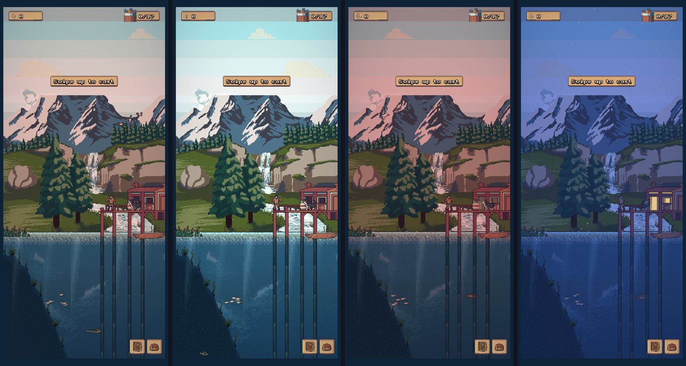
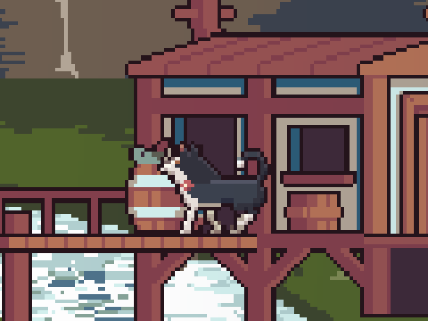

<title>Lake Studio Research</title>
<meta name="claude:viewport-fit-sides" content="cover">
<link rel="preconnect" href="https://fonts.googleapis.com">
<link rel="stylesheet" href="https://fonts.googleapis.com/css2?family=Pixelify+Sans:wght@500;700&family=Source+Serif+4:opsz,wght@8..60,400;8..60,600&family=JetBrains+Mono:wght@400;600&display=swap">
<style>
/* Layout: a single reading column like a field-station report, with full-bleed image plates and swatch strips drawn from the lake itself. */
:root {
  --bg: #eef1ec;
  --panel: #e2e8e2;
  --ink: #1b2826;
  --muted: #566764;
  --line: #c3cec7;
  --accent: #a24f45;
  --pine: #2d5747;
  --display: "Pixelify Sans", "Courier New", monospace;
  --body: "Source Serif 4", Georgia, "Times New Roman", serif;
  --mono: "JetBrains Mono", ui-monospace, Menlo, Consolas, monospace;
}
@media (prefers-color-scheme: dark) {
  :root:not([data-theme="light"]) {
    --bg: #0f1918; --panel: #172423; --ink: #e2e9e4; --muted: #97a9a4; --line: #2a3b39;
    --accent: #e29a8b; --pine: #86bba4; color-scheme: dark;
  }
}
:root[data-theme="dark"] {
  --bg: #0f1918; --panel: #172423; --ink: #e2e9e4; --muted: #97a9a4; --line: #2a3b39;
  --accent: #e29a8b; --pine: #86bba4; color-scheme: dark;
}
* { box-sizing: border-box; }
body {
  background: var(--bg); color: var(--ink); font-family: var(--body); font-size: 17px; line-height: 1.6;
  padding-left: max(16px, env(safe-area-inset-left, 0px)); padding-right: max(16px, env(safe-area-inset-right, 0px));
  padding-block: 28px 64px;
}
main { max-width: 720px; margin: 0 auto; display: flex; flex-direction: column; gap: 44px; }
h1, h2, h3 { font-family: var(--display); font-weight: 700; line-height: 1.15; text-wrap: balance; margin: 0; }
h1 { font-size: clamp(32px, 7vw, 46px); letter-spacing: 0.5px; }
h2 { font-size: 26px; color: var(--pine); }
h3 { font-size: 19px; font-weight: 500; }
p { margin: 0; max-width: 65ch; }
section { display: flex; flex-direction: column; gap: 16px; }
.eyebrow { font-family: var(--mono); font-size: 12px; letter-spacing: 1.5px; text-transform: uppercase; color: var(--muted); }
.lede { font-size: 19px; }
a { color: var(--accent); }
figure { margin: 0; display: flex; flex-direction: column; gap: 8px; }
figure img { width: 100%; image-rendering: pixelated; border-radius: 4px; display: block; }
figcaption { font-size: 14px; color: var(--muted); }
.stats { display: grid; grid-template-columns: repeat(auto-fit, minmax(150px, 1fr)); gap: 12px; }
.stat { border-top: 3px solid var(--pine); padding-top: 8px; display: flex; flex-direction: column; gap: 2px; }
.stat b { font-family: var(--display); font-size: 30px; font-weight: 700; font-variant-numeric: tabular-nums; }
.stat span { font-size: 14px; color: var(--muted); }
ol.findings { margin: 0; padding-left: 1.4em; display: flex; flex-direction: column; gap: 12px; }
ol.findings li::marker { font-family: var(--mono); color: var(--accent); }
ol.findings b { font-weight: 600; }
.meter { display: grid; grid-template-columns: 9.5em 1fr; gap: 6px 12px; align-items: center; font-size: 14px; }
.meter .bars { display: flex; flex-direction: column; gap: 3px; }
.bar { height: 10px; border-radius: 2px; background: var(--line); position: relative; }
.bar i { position: absolute; inset: 0 auto 0 0; border-radius: 2px; }
.bar.ours i { background: var(--pine); }
.bar.pack i { background: var(--accent); }
.legend { display: flex; gap: 16px; font-size: 13px; color: var(--muted); flex-wrap: wrap; }
.legend span::before { content: ""; display: inline-block; width: 10px; height: 10px; border-radius: 2px; margin-right: 6px; vertical-align: -1px; }
.legend .l-ours::before { background: var(--pine); }
.legend .l-pack::before { background: var(--accent); }
.skies { display: flex; flex-direction: column; gap: 6px; }
.sky { display: grid; grid-template-columns: 7.5em 1fr; align-items: center; gap: 12px; font-size: 14px; }
.sky div { height: 30px; border-radius: 3px; }
.swatches { display: grid; grid-template-columns: repeat(auto-fit, minmax(200px, 1fr)); gap: 14px; }
.sw { display: flex; flex-direction: column; gap: 6px; min-width: 0; }
.sw .strip { display: flex; height: 34px; border-radius: 3px; overflow: hidden; }
.sw .strip i { flex: 1; }
.sw b { font-weight: 600; font-size: 15px; }
.sw span { font-size: 13px; color: var(--muted); font-family: var(--mono); overflow-wrap: anywhere; }
.lessons { display: grid; grid-template-columns: repeat(auto-fit, minmax(250px, 1fr)); gap: 18px 24px; }
.lessons div { display: flex; flex-direction: column; gap: 4px; }
.lessons h3 { color: var(--accent); }
.lessons p { font-size: 15px; }
ol.rules { margin: 0; padding: 0; list-style: none; counter-reset: r; display: flex; flex-direction: column; border-top: 1px solid var(--line); }
ol.rules li { counter-increment: r; display: grid; grid-template-columns: 2.4em 1fr; gap: 8px; padding: 12px 0; border-bottom: 1px solid var(--line); }
ol.rules li::before { content: counter(r, decimal-leading-zero); font-family: var(--mono); color: var(--muted); font-size: 14px; padding-top: 3px; }
.qs { display: flex; flex-direction: column; gap: 14px; }
.q { background: var(--panel); border-radius: 6px; padding: 16px 18px; display: flex; flex-direction: column; gap: 8px; }
.q h3 { font-size: 18px; }
.q ul { margin: 0; padding-left: 1.2em; font-size: 15px; display: flex; flex-direction: column; gap: 4px; }
.q .rec { font-size: 14px; color: var(--pine); font-family: var(--mono); }
.next { font-size: 15px; color: var(--muted); }
code { font-family: var(--mono); font-size: 0.85em; }
</style>

<main>
  <header style="display:flex;flex-direction:column;gap:12px">
    <span class="eyebrow">Reel It In · Studio review 1 · 22 Oct 2026</span>
    <h1>What the lake should look like</h1>
    <p class="lede">We measured every picture in the game, then researched three things: how pixel artists draw each material, what a north-woods lake really looks like, and how other games keep everything in one style. Here is what we found, the rules it suggests, and five decisions that are yours.</p>
  </header>

  <section>
    <span class="eyebrow">The audit</span>
    <h2>Half the scene isn't ours yet</h2>
    <div class="stats">
      <div class="stat"><b>103</b><span>images measured</span></div>
      <div class="stat"><b>7</b><span>art packs still in the scene</span></div>
      <div class="stat"><b>2&times;</b><span>pixel size of the sky, mountains and far bank</span></div>
      <div class="stat"><b>0&deg;</b><span>hue shift in the pack backdrop</span></div>
    </div>
    <figure>
      
      <figcaption>The lake now, at 7 am, noon, 7 pm and 11 pm. The light changes by one tint laid over everything.</figcaption>
    </figure>
    <figure>
      
      <figcaption>Two pixel sizes on one screen. The far bank behind the dock (left) is drawn at double size and enlarged; Olive and the hut are drawn at true size.</figcaption>
    </figure>
    <div class="meter" role="img" aria-label="Comparison of our art and the pack art on four measurements">
      <span>Drawn at 2&times;</span><div class="bars"><div class="bar ours"><i style="width:25%"></i></div><div class="bar pack"><i style="width:82%"></i></div></div>
      <span>Hue shift</span><div class="bars"><div class="bar ours"><i style="width:57%"></i></div><div class="bar pack"><i style="width:3%"></i></div></div>
      <span>Stray-pixel noise</span><div class="bars"><div class="bar ours"><i style="width:9%"></i></div><div class="bar pack"><i style="width:47%"></i></div></div>
      <span>Checker dither</span><div class="bars"><div class="bar ours"><i style="width:1%"></i></div><div class="bar pack"><i style="width:24%"></i></div></div>
    </div>
    <div class="legend"><span class="l-ours">Our art (median)</span><span class="l-pack">Worst pack art: backdrop, lakebed, underwater</span></div>
    <ol class="findings">
      <li><b>Two pixel sizes.</b> The sky, mountains, far bank, clouds, underwater rock shelf and interface boards are drawn at 2&times; and enlarged. This, more than anything, makes the scene look assembled.</li>
      <li><b>The wrong mountains.</b> Snow-capped alpine peaks; a north-woods lake sits among low, rounded, forested hills.</li>
      <li><b>Two cloud styles:</b> cartoon puffs and a wispy painted cloud.</li>
      <li><b>No hue shift in the backdrop.</b> It only darkens; our creatures shade from warm light to cool shadow.</li>
      <li><b>A noisy lakebed and dithered water.</b> Nearly half the lakebed plants' pixels are lone specks; the underwater light is a coarse checkerboard.</li>
      <li><b>Smaller things:</b> a banded sky, interface boards that read as brick, a half-outlined float and branch.</li>
    </ol>
    <p>What already works and stays: the hut, dock, boat and angler, our creatures and fish, the journal and backpack, the night lights.</p>
  </section>

  <section>
    <span class="eyebrow">The real place</span>
    <h2>A north-woods lake, around 47&deg; north</h2>
    <p>Northern Minnesota, Wisconsin and Michigan: Canadian Shield granite, white pines over spruce and birch, loons, and summer light that lasts past 9 pm. Colours are estimates from photographs.</p>
    <h3>The sky through a summer day</h3>
    <div class="skies">
      <div class="sky"><span>Dawn</span><div style="background:linear-gradient(90deg,#3A4A78,#C88AA0,#F2C29A)"></div></div>
      <div class="sky"><span>Midday</span><div style="background:linear-gradient(90deg,#3E7CC4,#6FA4D8,#C6DDEE)"></div></div>
      <div class="sky"><span>Golden hour</span><div style="background:linear-gradient(90deg,#5A86B8,#E8B070,#F4C878)"></div></div>
      <div class="sky"><span>Sunset</span><div style="background:linear-gradient(90deg,#4A4F80,#D86A5A,#F49A48)"></div></div>
      <div class="sky"><span>Blue hour</span><div style="background:linear-gradient(90deg,#1E2A55,#3A4A7A,#8A6A80)"></div></div>
      <div class="sky"><span>Night</span><div style="background:linear-gradient(90deg,#05070F,#0B1020,#141A2A)"></div></div>
    </div>
    <figcaption>Top of the sky on the left, horizon on the right.</figcaption>
    <h3>Materials of the shore</h3>
    <div class="swatches">
      <div class="sw"><div class="strip"><i style="background:#2E4238"></i><i style="background:#4F6B5A"></i><i style="background:#7A9584"></i></div><b>White pine needles</b><span>soft blue-green, tiered, flat-topped</span></div>
      <div class="sw"><div class="strip"><i style="background:#7A4E3A"></i><i style="background:#C2643A"></i></div><b>Red pine bark</b><span>glows orange in evening sun</span></div>
      <div class="sw"><div class="strip"><i style="background:#2A2626"></i><i style="background:#D9A88A"></i><i style="background:#EDEAE2"></i></div><b>Paper birch</b><span>chalk white, black marks, pink curls</span></div>
      <div class="sw"><div class="strip"><i style="background:#3A3030"></i><i style="background:#C99A8A"></i><i style="background:#E0B8A8"></i></div><b>Pink granite</b><span>worn smooth and round by the waves</span></div>
      <div class="sw"><div class="strip"><i style="background:#4A4640"></i><i style="background:#6E6A64"></i><i style="background:#9A968E"></i></div><b>Weathered dock wood</b><span>silver-grey within a season or two</span></div>
      <div class="sw"><div class="strip"><i style="background:#4A6A6A"></i><i style="background:#7A9AA8"></i><i style="background:#A8BCC8"></i></div><b>Distant hills</b><span>near, middle, far: layered blue haze</span></div>
    </div>
    <h3>Two kinds of lake water</h3>
    <div class="swatches">
      <div class="sw"><div class="strip"><i style="background:#5E8F8A"></i><i style="background:#2F5E66"></i><i style="background:#163640"></i><i style="background:#0A1A20"></i></div><b>Clear lake</b><span>green-teal, you can see 10&ndash;20 ft down</span></div>
      <div class="sw"><div class="strip"><i style="background:#B88A3A"></i><i style="background:#6A4420"></i><i style="background:#2A2010"></i><i style="background:#0A0F18"></i></div><b>Tannin lake</b><span>root-beer brown, amber shallows, mirror-dark</span></div>
    </div>
  </section>

  <section>
    <span class="eyebrow">Other games</span>
    <h2>How others keep one look</h2>
    <div class="lessons">
      <div><h3>Finish the restyle</h3><p>When Terraria re-sprited only part of its art, players said it looked like "a weird texture pack". A half-restyled game looks worse than either style.</p></div>
      <div><h3>One grid, no exceptions</h3><p>Owlboy banned gradients, blur and tracing; even its makers allowed only rotation. Mixed pixel sizes read as amateur.</p></div>
      <div><h3>Light that moves with the day</h3><p>Cast n Chill, the closest game to ours, changes the quality of its light through the day; Mark Ferrari re-lit one picture by swapping palettes.</p></div>
      <div><h3>Distance in bands</h3><p>Each band back is lighter, softer and nearer the sky's colour, with less texture; the farthest hills reuse the sky's own colours.</p></div>
      <div><h3>A golden scene</h3><p>Finish one whole screen first, and judge every later piece of art next to it. Track every asset: pack, recoloured, redrawn, approved.</p></div>
      <div><h3>Specific critique</h3><p>Good reviews are fixable: "the outline goes from 3 px to 1", "the light on this rock doesn't match". We'll review that way.</p></div>
    </div>
  </section>

  <section>
    <span class="eyebrow">Draft style bible</span>
    <h2>Ten rules to try</h2>
    <ol class="rules">
      <li><span>One pixel grid. Everything drawn at 1&times;, nothing enlarged or scaled.</span></li>
      <li><span>One warm key light from the upper left; at night a cool moon and warm windows.</span></li>
      <li><span>Every material has a 4&ndash;6 shade ramp, hue-shifted about 15&ndash;20&deg; a step: shadows toward blue-violet, lights toward yellow. Metal the other way round.</span></li>
      <li><span>Ramps are shared: dock wood, bark and cattail heads; hills and far trees borrow the sky's colours.</span></li>
      <li><span>Distance in bands: sky, low forested hills in haze, far bank, lake, dock, underwater; each farther band lighter, softer, less detailed.</span></li>
      <li><span>Outlines on actors only. Scenery never darker than the outline or more saturated than the creatures.</span></li>
      <li><span>Texture by suggestion: a few planks with grain, a few shaded stones; calm inside, detail at the edges.</span></li>
      <li><span>Clusters, not specks. No noise dither; ordered dither only for big gradients, rough only for foam and sand sparkle.</span></li>
      <li><span>Water moves by rule: glints 1 px at a time, reflections flipped, shorter, darker and broken by gaps.</span></li>
      <li><span>Only what a north-woods lake would have: white pine, granite, loons, cattails in the mucky bay.</span></li>
    </ol>
  </section>

  <section>
    <span class="eyebrow">Your call</span>
    <h2>Five decisions</h2>
    <div class="qs">
      <div class="q"><h3>1. What kind of lake?</h3><ul><li>Clear: green-teal water, you can see the bottom and the fish.</li><li>Tannin: root-beer brown, amber shallows, very dark and mirror-like.</li></ul><span class="rec">Suggested: clear, because watching fish is the game</span></div>
      <div class="q"><h3>2. The hut</h3><ul><li>Keep it as it is.</li><li>Restyle it: gable roof, silver-grey wood, barn-red or green trim, dock on pipe legs.</li><li>Swap it for a weathered boathouse on a timber crib.</li></ul><span class="rec">Suggested: restyle, so it stays ours but belongs up north</span></div>
      <div class="q"><h3>3. Seasons</h3><ul><li>Always summer.</li><li>Follow the real calendar, as the light follows the clock: gold aspen in October, the hare turning white, snow.</li></ul><span class="rec">Suggested: summer now, built so seasons can come later</span></div>
      <div class="q"><h3>4. How the time of day lights the scene</h3><ul><li>Keep the single tint over everything.</li><li>A palette for each time of day (dawn, day, golden hour, dusk, night), with every material drawn in it, so the light changes the colours instead of tinting them.</li></ul><span class="rec">Suggested: palettes, the biggest step up in quality</span></div>
      <div class="q"><h3>5. New wildlife</h3><ul><li>Add the common loon, the bird of these lakes and Minnesota's state bird.</li><li>Also heron, kingfisher, osprey, painted turtle, beaver.</li></ul><span class="rec">Suggested: the loon first</span></div>
    </div>
  </section>

  <section>
    <span class="eyebrow">Next</span>
    <h2>Then we build the materials library</h2>
    <p>Once you've answered, each material gets a ramp, a texture rule and a test sheet: water, wood, bark, granite, conifer needles, grass and reeds, sky, clouds, distant hills, sand and muck. Then the first studies: the sky and the distant hills, since they fill the most of the screen and are the furthest from our rules.</p>
    <p class="next">Everything here, with sources, is in the repo under <code>docs/studio/</code>.</p>
  </section>
</main>
